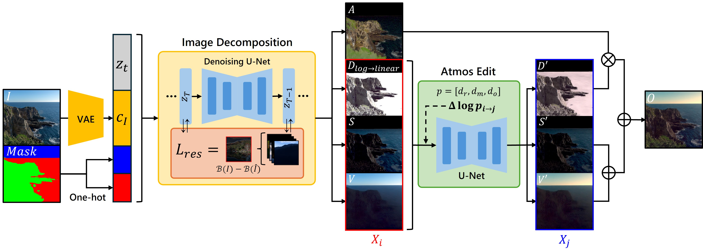
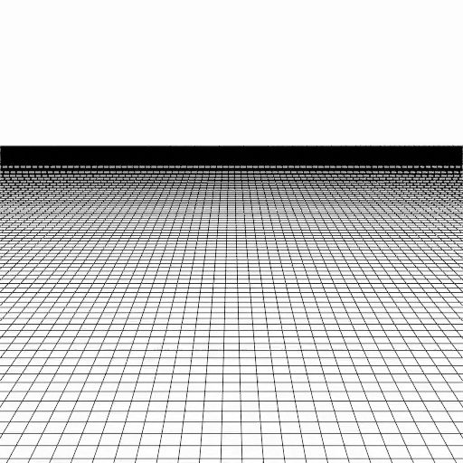
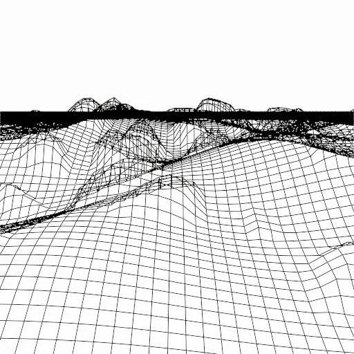
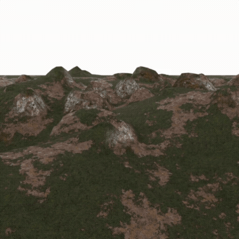
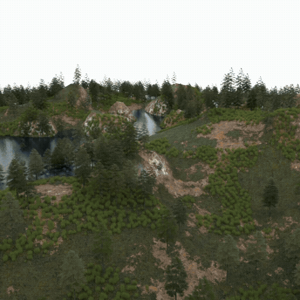

We present a latent diffusion-based framework for atmosphere-aware intrinsic decomposition from a single terrain image. In large-scale terrain scenes, atmospheric effects such as fog, haze, and aerial perspective are strongly entangled with surface reflectance and shading, making intrinsic decomposition highly ill-posed. Existing deep learning-based methods mainly focus on albedo and shading estimation and do not explicitly model atmospheric scattering, which often leads to degraded decomposition quality in outdoor scenes with large depth variations. To address this problem, we propose a terrain-specific decomposition framework that explicitly separates an input image into albedo, shading, and atmospheric volume components. We construct a large-scale synthetic terrain dataset with ground-truth intrinsic layers and train a latent diffusion model to estimate them from a single image. To improve compositing consistency, our method incorporates constraints based on a renderer-pass-inspired compositing equation during training and reconstruction guidance during inference. Experimental results demonstrate that the proposed method enables more reliable decomposition of terrain images and supports atmosphere-aware image editing.
We explicitly separate a terrain image into albedo, diffuse/specular shading, and an atmospheric volume component using a diffusion model trained with a compositing-equation loss and reconstruction guidance. This yields reliable decomposition even for scenes with fog and water, and further enables atmosphere-aware editing such as fog density and light scattering.


1.gif
2.gif
3.gif
4.gif※ fBm: fractional Brownian motion
@inproceedings{tatsukawa2026atmosphere,
author = {Tatsukawa, Shun and Sato, Syuhei},
title = {{Atmosphere-Aware Intrinsic Decomposition from a Single Terrain Image with Latent Diffusion Models}},
booktitle = {Pacific Graphics 2026},
year = {2026},
publisher = {The Eurographics Association},
}This work was supported by JSPS KAKENHI JP23K28204, JP25K00154, and JST CREST JPMJCR2554.